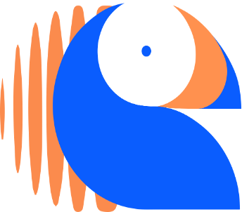
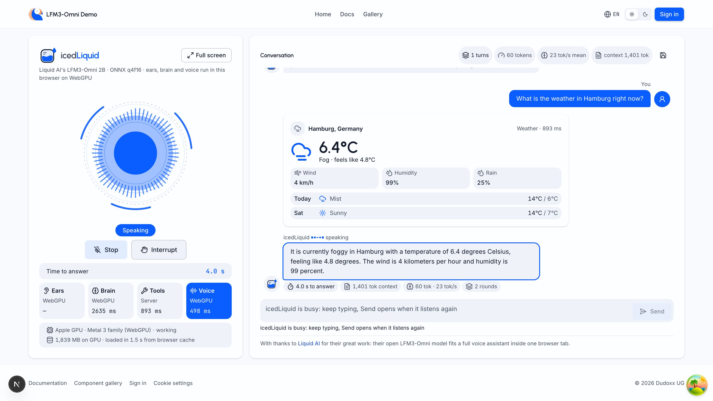

Field report · one Chrome tab
A voice assistant that lives in one Chrome tab.
What we measured in one session, and where it still fails. Built on LFM models by Liquid AI (https://www.liquid.ai).
Hook
Measured over 12 turns in one recorded session, most of them typed. Brain and voice ran on the laptop GPU inside one Chrome tab. No server ran the model.
1121.1
milliseconds, the median time from the end of a question to the first audio
Problem
Usual path
the microphone streams to a cloud speech service, a hosted language model and a voice service. Three hops, and the audio leaves the device.
icedLiquid
one LFM3-Omni model by Liquid AI hears, thinks and speaks in the tab on WebGPU. The audio never leaves the machine.
Problem
A small model that guesses the time is worse than no model. So icedLiquid calls a tool for anything current and answers only from the result.
Design rule behind the icedLiquid tools
How it works
01
Mic
the audio stays on the machine
02
Ears
speech recognition on WebGPU, lane browser
03
Brain
LFM3-Omni reads the turn and picks a tool
04
Tools
weather, time and search, drawn as a card
05
Voice
codec tokens become audio while it still writes

How it works
10 tools — weather, time, web search, theme, language, end of session
100.0 % right tool calls at N=100 on the MLX engine
Earlier live check: 212 ms weather lookup, 3170 ms web search. The screen is a later capture.
Measured
Medians in milliseconds over one session. The slow end, 2976.0 ms at p90, is the weather turn with two model rounds.
Measured
14.4
tok/s, brain generation rate, median
24.0
tok/s, voice codec token rate, median
1491
tokens of context on the last turn, up from 1150
Measured
Cold load
6015.3 ms in the WebGPU bench run, weights downloaded on a cache miss.
From cache
1477.3 ms in the recorded session. Two runs one day apart: an order of magnitude, not an A/B test.
Reproduce
Step 1
provision the browser weights once with provision_webgpu.py
Step 2
start the app with ./ddx-manage.sh ui on port 3400
Step 3
press Start talking once and ask for the weather
Step 4
export the session and run judge-voice-agent.py
Step 5
check every number with claims.py
Open gaps
A replay bench the next night reached a non-empty share of 1.00, still an open gap. The server gateway scored 5.7 % word errors at 166.0 ms: a comparison point, not the demo path.
0 of 7
live microphone passes that returned text in the browser lane
Open gaps
Wrong answer
asked the time in Tokyo, it skipped the time tool and the answer was wrong
Mixed turns
the questions were typed; five noise turns from the open mic stay in the medians
At capture
a cold first Start only loaded the model, since fixed; one Mac, one session
Credit
Thank you to the Liquid AI team for LFM3-Omni: one model that listens, thinks and speaks, small enough to run in a browser tab, with no audio leaving the room.
The Dudoxx team · https://www.liquid.ai